The Energetics of Molecular Adaptation
February 19, 2020 - SK Lab Group Meeting
Life is stressful
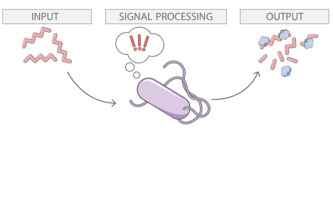
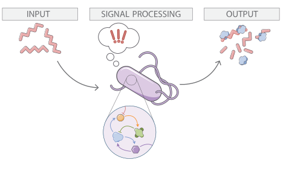
Cells draw inferences from measurements of their environment and adapt in response.
Adaptation occurs across time and space, all sculpted by the forces of evolution
Adaptation traverses the biological scales
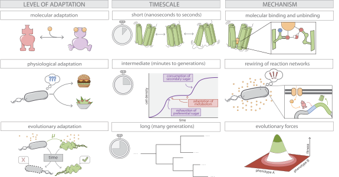Transcriptional regulation is inherently adaptive

Monod 1965 GROWTH
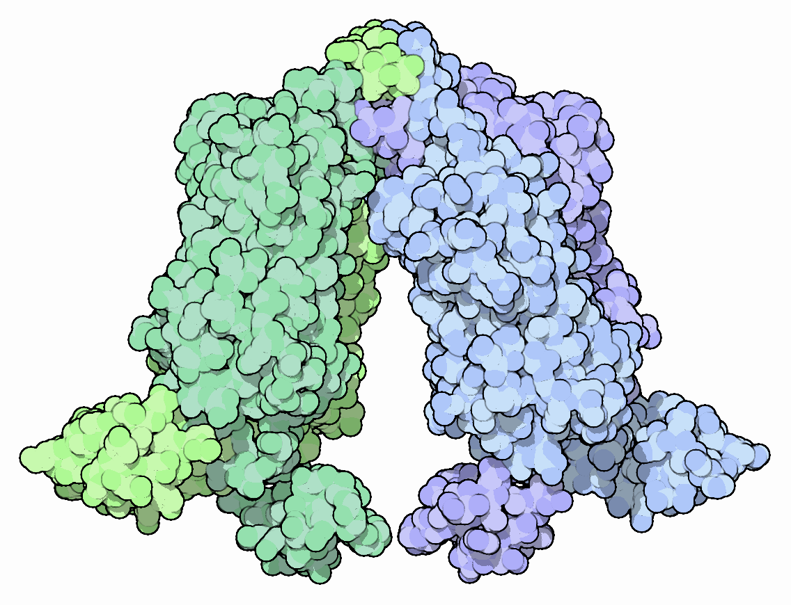
Molecular
Regulatory molecule binds to environmental signal, switching from one state to another.
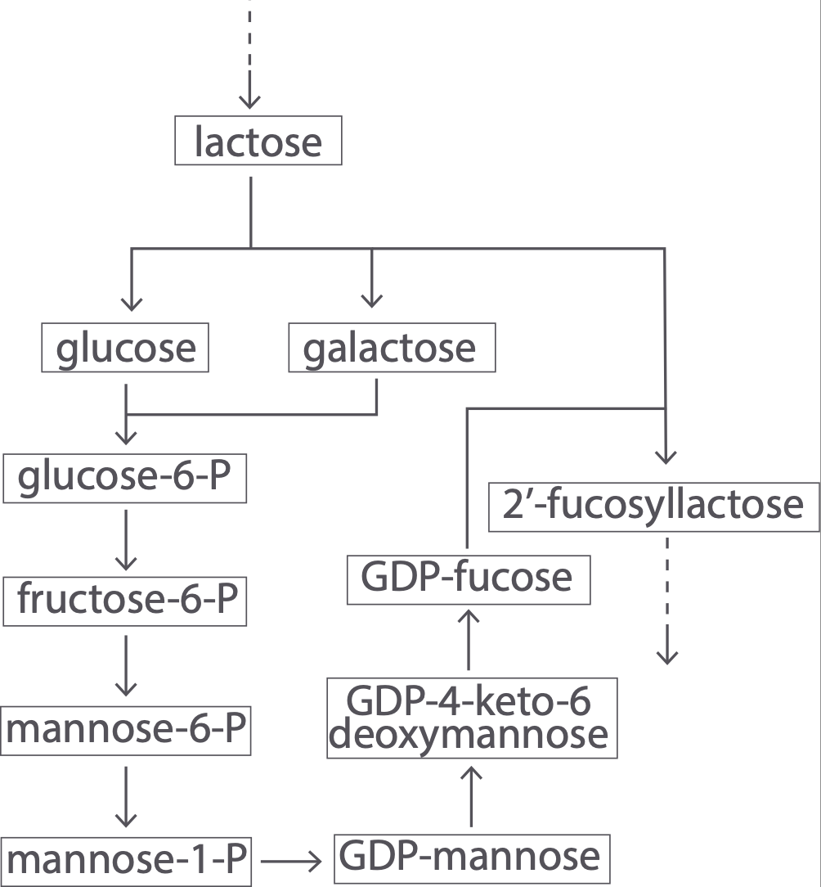
Physiological
Regulatory molecule triggers rewiring of metabolic pathways, shifting resource utilization from one source to another
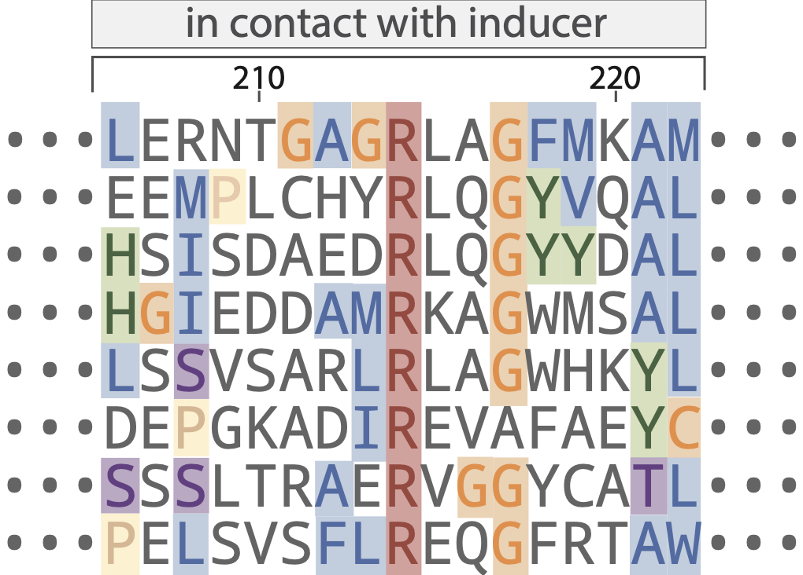
Evolutionary
Sequence of the regulatory molecule across organisms has conserved and variable regions, sculpted by forces of evolution.
The "hydrogen atom" of transcriptional regulation
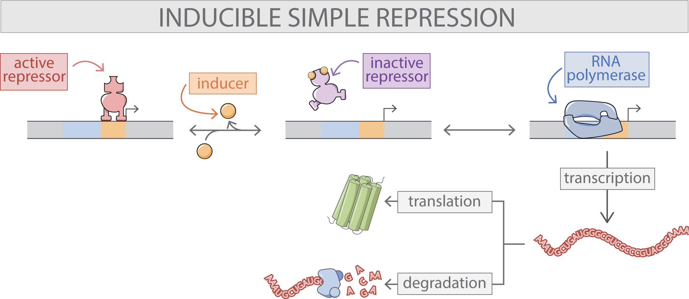
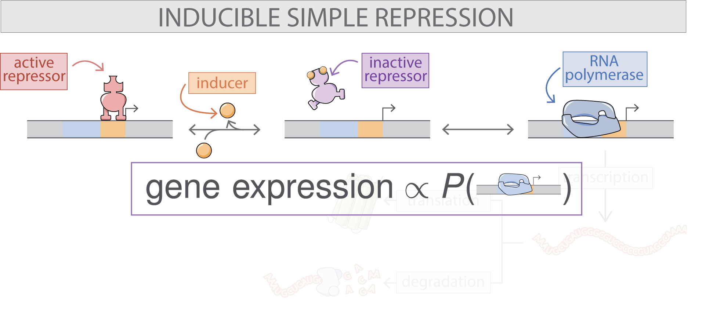
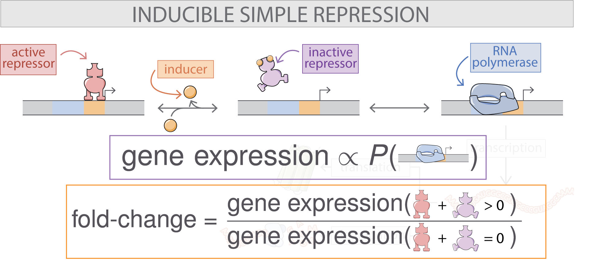
Mathematizing the cartoons with statistical mechanics
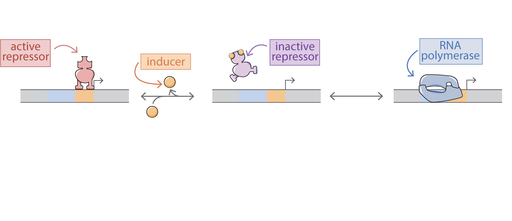
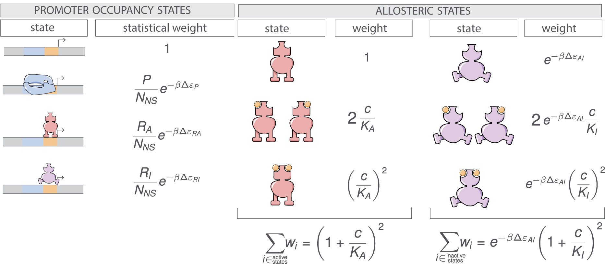
Adapted from Razo-Mejia. et al. Cell Systems (2018). doi.org/c746
A succinct input-output function for simple repression
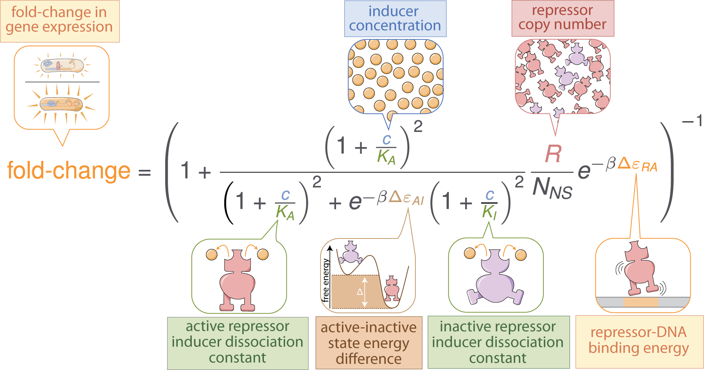Razo-Mejia. et al. Cell Systems (2018). doi.org/c746
From one, many
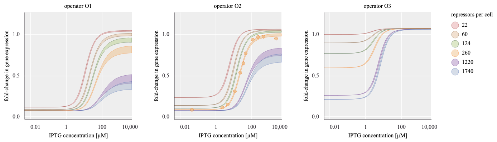
Adapted from Razo-Mejia. et al. Cell Systems (2018). doi.org/c746
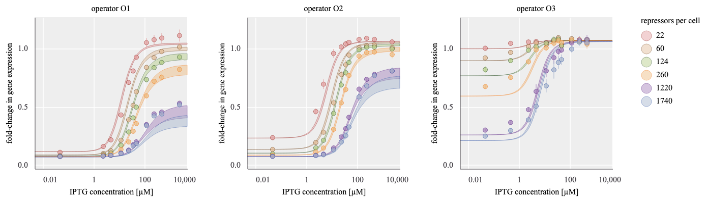
There are many different regimes which yield the same fold-change.
Can the dimensionality be reduced, yet still describe the diverse phenomenology?
Further coarse-graining to a two-state model
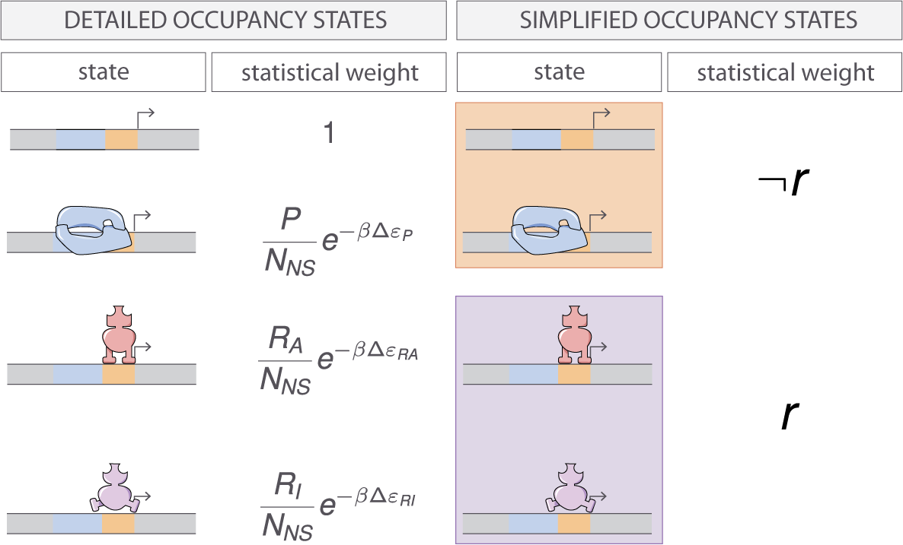
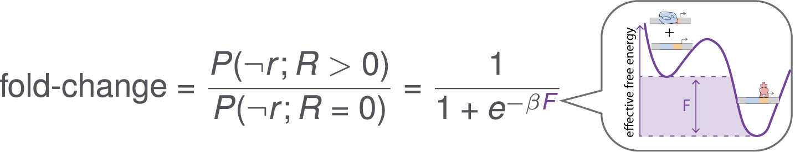
The fold-change is scaled by the effective free energy

From many, one
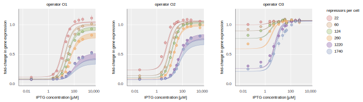
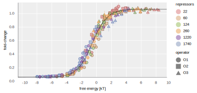